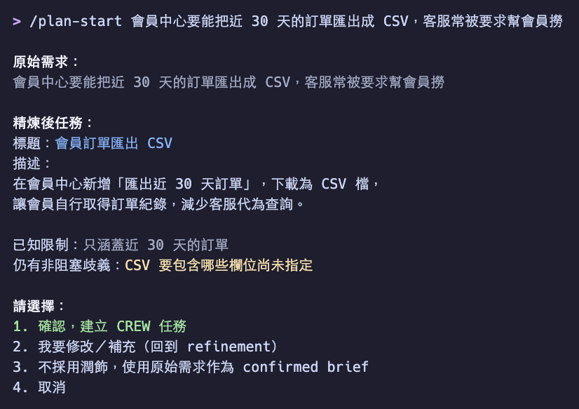

01 · Intake Refinement動手前先確認「要做什麼」
/plan-start 與 /bug-start 會先把原始需求交給唯讀的 Intake Refiner 整理成短標題與描述，列出已知限制與歧義，由人明確確認後才建立任何東西。使用者不需要手動呼叫 Refiner，它不是 Slash Skill。
- 確認前不建 Notion 頁面、不建
.spec、不初始化 state、不動 Git branch；選「取消」就零 side effect - 只有不回答就可能改變需求方向時才提問，最多 3 個問題
- 確認後、寫入任何地方前，疑似 password、token、API key、private key、Cookie 的內容必須先由人提供遮蔽版本
- Host 不能委派時，主 Agent inline 執行同一份唯讀 contract，人類確認不能省略
